<!doctype html>
<html lang="en">
<head>
  <meta charset="utf-8">
  <meta name="viewport" content="width=device-width, initial-scale=1">
  <title>arxiv digest — 2026-08-06</title>
  <style>
:root {
  --bg: #ffffff;
  --fg: #1f2328;
  --muted: #59636e;
  --border: #d0d7de;
  --card: #f6f8fa;
  --link: #0969da;
}
body {
  max-width: 980px;
  margin: 0 auto;
  padding: 2rem 1rem 5rem;
  font-family: -apple-system, BlinkMacSystemFont, "Segoe UI", Helvetica, Arial, sans-serif;
  line-height: 1.55;
  color: var(--fg);
  background: var(--bg);
}
a { color: var(--link); }
img { max-width: 100%; height: auto; }
pre, code { background: var(--card); border-radius: 6px; }
pre { padding: 1rem; overflow-x: auto; }
blockquote { border-left: 4px solid var(--border); padding-left: 1rem; color: var(--muted); }
details { margin: 0.6rem 0; }
summary { cursor: pointer; font-weight: 600; }
.paper-figures-scroll {
  display: flex;
  gap: 1rem;
  overflow-x: auto;
  overscroll-behavior-x: contain;
  padding: 0.75rem 0.25rem 1rem;
  margin: 1rem 0 1.25rem;
  border-top: 1px solid var(--border);
  border-bottom: 1px solid var(--border);
  scroll-snap-type: x proximity;
}
.paper-figure-card {
  flex: 0 0 min(260px, 72vw);
  scroll-snap-align: start;
  background: var(--card);
  border: 1px solid var(--border);
  border-radius: 12px;
  padding: 0.55rem;
}
.paper-figure-card img {
  display: block;
  width: 100%;
  max-height: 240px;
  object-fit: contain;
  background: white;
  border-radius: 8px;
}
.paper-figure-caption {
  display: block;
  margin-top: 0.5rem;
  color: var(--muted);
  font-size: 0.85rem;
}
.figure-strip-hint {
  color: var(--muted);
  font-size: 0.9rem;
  margin-bottom: -0.3rem;
}
</style>
  <!-- MathJax: renders $...$ inline math and $$...$$ display math, plus
       \(...\) and \[...\]. Loaded from the official CDN; works offline
       once cached. Configured to skip code/pre blocks so arxiv IDs that
       look like dollar amounts don't get mangled. -->
  <script>
    window.MathJax = {
      tex: {
        inlineMath: [['$', '$'], ['\\(', '\\)']],
        displayMath: [['$$', '$$'], ['\\[', '\\]']],
        processEscapes: true,
        processEnvironments: true
      },
      options: {
        skipHtmlTags: ['script', 'noscript', 'style', 'textarea', 'pre', 'code'],
        ignoreHtmlClass: 'tex2jax_ignore',
        processHtmlClass: 'tex2jax_process'
      }
    };
  </script>
  <script id="MathJax-script" async
    src="https://cdn.jsdelivr.net/npm/mathjax@3/es5/tex-chtml.js"></script>
</head>
<body>
<header style="background-color: #333; color: white; padding: 15px; margin-bottom: 20px;">
  <h1 style="margin: 0; font-size: 24px;">
    <a href="https://ochelpan.github.io/arXiv_clean/" style="color: white; text-decoration: none;">Main</a>
  </h1>
</header>

<h1>Daily arXiv Report</h1>

<hr>
<p>
<a href="index.html">← Index</a>
 · <a href="papers_06.html">← Previous</a>
</p>
<hr>

<h2>Papers 121–126</h2>
<p><a id="paper-2608.03568"></a></p>
<h3 id="strain-tuning-of-orbital-driven-giant-magnetoresistance-in-van-der-waals-ferrimagnet-mnmath1179mathsimath1180mathtemath1181math"><a href="http://arxiv.org/abs/2608.03568v1">Strain Tuning of Orbital-Driven Giant Magnetoresistance in van der Waals ferrimagnet Mn$_3$Si$_2$Te$_6$</a></h3>
<p><strong>Authors:</strong> Abdul Ahad, Miuko Tanaka, Shunta Aoki, Darius-Alexandru Deaconu, Varun Shah, Tenta Kitamura, Hao Ou, Mohammad Saeed Bahramy, Jiang Pu, Toshiya Ideue<br>
<strong>Type:</strong> experiment · <strong>Category:</strong> strongly correlated electrons · <strong>PDF:</strong> <a href="https://arxiv.org/pdf/2608.03568v1">https://arxiv.org/pdf/2608.03568v1</a><br>
<strong>Analysis basis:</strong> full PDF text, analyzed in chunks
<strong>Topic relevance:</strong> <code>spintronics-quantum-optics interface</code> <strong>3/5</strong></p>
<div class="figure-strip-hint">↔ Scroll figures horizontally</div>
<div class="paper-figures-scroll">
<figure class="paper-figure-card">
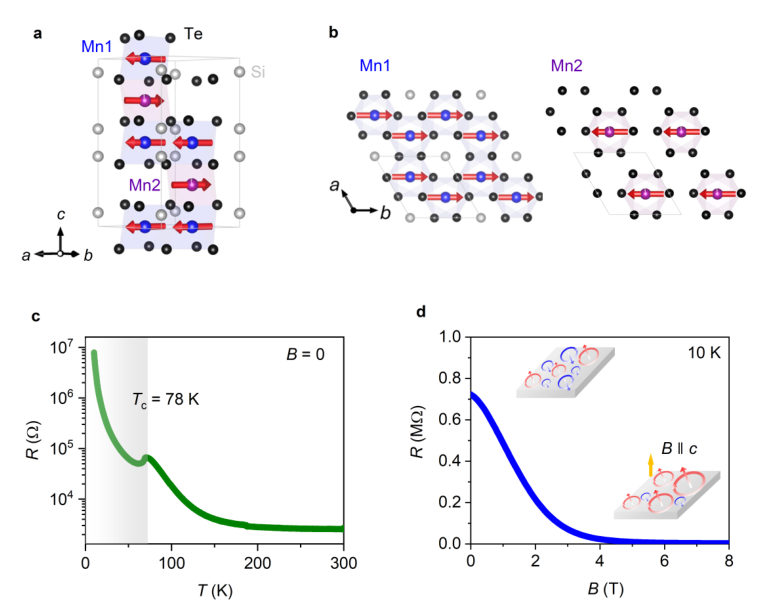
<figcaption class="paper-figure-caption"><b>Fig 1.</b> FIG. 1. Side view (a) and top view (b) of the crystal/ magnetic structures. There are two</figcaption>
</figure>
<figure class="paper-figure-card">
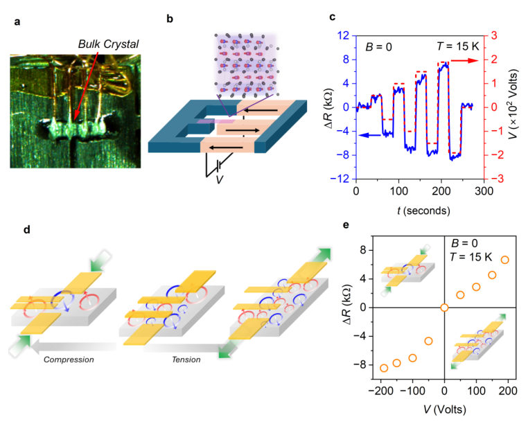
<figcaption class="paper-figure-caption"><b>Fig 2.</b> FIG. 2. (a) Photograph of a bulk crystal mounted on the holder of strain cell’s titanium plate</figcaption>
</figure>
<figure class="paper-figure-card">
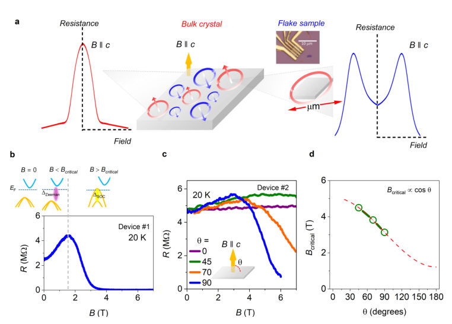
<figcaption class="paper-figure-caption"><b>Fig 3.</b> FIG. 3. (a) Schematics of magnetoresistance (B ∥c) of bulk samples containing multidomain COC</figcaption>
</figure>
<figure class="paper-figure-card">
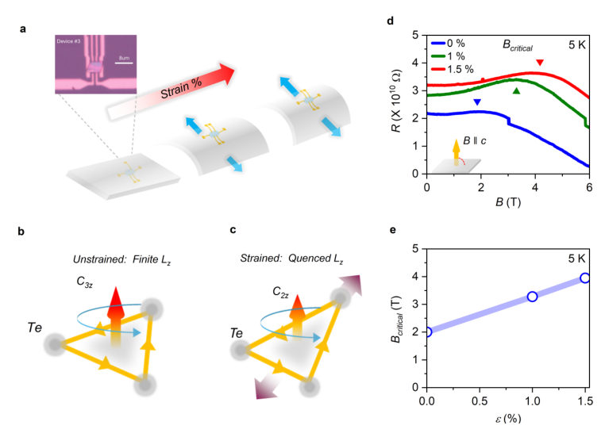
<figcaption class="paper-figure-caption"><b>Fig 4.</b> FIG. 4. (a) Schematic of uniaxial strain application for the nanodevices fabricated on the flexible</figcaption>
</figure>
</div>

<p><strong>Summary.</strong> The research reports on using mechanical strain to control the Giant Magnetoresistance in a van der Waals ferrimagnet. By comparing bulk crystals (where domain wall dynamics dominate) with nanoflakes (single-domain behavior), the authors establish that strain tunes the orbital angular momentum, providing a unified understanding of this emergent quantum magnetic effect.</p>
<p><strong>Why it may be interesting.</strong> This work demonstrates how mechanical strain can be used as an external knob to tune fundamental electronic and magnetic properties governed by orbital physics, which is highly relevant for designing novel quantum spintronic devices.</p>
<details>
<summary>Detailed structure</summary>
<p><strong>Main problem.</strong> The study investigates how mechanical strain can control the orbital-driven Giant Magnetoresistance (GMR) in the van der Waals ferrimagnet Mn3Si2Te6, aiming to establish a unified microscopic mechanism for this effect.</p>
<p><strong>Main result.</strong> Strain proves to be an exceptionally effective control parameter; it manipulates domain wall density in bulk crystals and tunes the orbital angular momentum component responsible for GMR in single-domain nanoflakes.</p>
<p><strong>Method.</strong> The researchers used in situ measurements of electrical resistance ($\Delta R$) under controlled uniaxial tensile and compressive strain, comparing results from both bulk crystals and exfoliated flake devices.</p>
<p><strong>Model / system.</strong> The system is the van der Waals ferrimagnet Mn3Si2Te6. The physics involves complex interplay between magnetic ordering (ferrimagnetic), orbital angular momentum ($L_z$) originating from Te p-orbitals, and strain-induced symmetry changes that govern magnetotransport.</p>
<p><strong>Key observables.</strong> Resistance modulation ($\Delta R$) vs. uniaxial strain; Critical magnetic field ($B_{	ext{critical}}$) dependence on strain and field angle ($   heta$); Magnetoresistance (MR) curves in multi-domain vs. single-domain regimes.</p>
<p><strong>Important parameters / regimes.</strong> Uniaxial strain ($\epsilon$), Magnetic Field ($B$), Temperature ($T$), Orbital angular momentum component ($L_z$).</p>
<p><strong>Assumptions / limitations.</strong> The transport behavior can be explained by either the reorganization of chiral orbital current (COC) domains in bulk or by direct band structure modulation via spin-orbit coupling in single-domain flakes.</p>
<p><strong>Figures summary.</strong> Figures show strain cell setups, $\Delta R$ vs. strain curves demonstrating domain wall changes, and MR vs. B curves comparing multi-domain and single-domain behavior, with $B_{	ext{critical}}$ shifting linearly with tensile strain.</p>
<p><strong>Paper structure.</strong> The paper systematically compares magnetotransport measurements across different sample sizes (bulk vs. flakes) under varying strain conditions to reconcile conflicting observations regarding the origin of GMR, culminating in a unified model linking strain to orbital degrees of freedom.</p>
</details>
<details>
<summary>Abstract</summary>
<p>Strain engineering of magnetotransport offers a powerful strategy for uncovering emergent electronic and domain phenomena in quantum magnetic materials, while providing a promising pathway toward next-generation mechanically programmable spintronic technologies. Van der Waals magnets are particularly attractive in this context because their high crystallinity and mechanical flexibility allow exceptionally large, precisely controllable strain, enabling access to strain-induced functionalities unattainable in conventional solids. Here, we report systematic strain control of the van der Waals magnet Mn$_3$Si$_2$Te$_6$, which exhibits an unconventional colossal magnetoresistance whose microscopic origin remains under debate. We demonstrate in situ large-strain modulation of the electrical resistance in bulk crystals and show that the effect can be consistently explained by strain-tunable chiral orbital-current domains. Furthermore, measurements on exfoliated flake devices containing a single chiral domain reveal direct strain control of the electronic structure affected by orbital magnetic moment, establishing a unified microscopic mechanism for the unconventional colossal magnetoresistance. These results identify strain as an exceptionally effective control parameter for tailoring electronic and magnetic states in van der Waals magnets and provide a conceptual framework for realizing spin-straintronic functionalities based on orbital degrees of freedom.</p>
</details>
<p><sub><a href="#top">↑ back to top</a></sub></p>

<p><a id="paper-2608.02899"></a></p>
<h3 id="lifshitz-transitions-and-isospin-polarization-in-twist-decoupled-monolayer-bilayer-graphene"><a href="http://arxiv.org/abs/2608.02899v1">Lifshitz transitions and isospin polarization in twist-decoupled monolayer-bilayer graphene</a></h3>
<p><strong>Authors:</strong> Alex Boschi, Leonardo Sabattini, Sergey Slizovskiy, Vaidotas Mišeikis, Zewdu M. Gebeyehu, Stiven Forti, Antonio Rossi, Kenji Watanabe, Takashi Taniguchi, Fabio Beltram, Vladimir I. Fal'ko, Camilla Coletti, Sergio Pezzini<br>
<strong>Type:</strong> both · <strong>Category:</strong> strongly correlated electrons · <strong>PDF:</strong> <a href="https://arxiv.org/pdf/2608.02899v1">https://arxiv.org/pdf/2608.02899v1</a><br>
<strong>Analysis basis:</strong> full PDF text, analyzed in chunks
<strong>Topic relevance:</strong> <code>driven-dissipative phase transition</code> <strong>2/5</strong> · <code>Kondo &amp; dissipative impurity</code> <strong>1/5</strong> · <code>analog quantum simulation</code> <strong>1/5</strong> · <code>non-equilibrium dynamics</code> <strong>1/5</strong></p>
<div class="figure-strip-hint">↔ Scroll figures horizontally</div>
<div class="paper-figures-scroll">
<figure class="paper-figure-card">

<figcaption class="paper-figure-caption"><b>Fig 1.</b> FIG. 1: Accessing the valence band of biased BLG within TMBG. (a) Sketch of the studied device with gating configuration. Yellow: Au gate; dark gray: graphite gate; blue: MLG; red: BLG. (b) Left: low-energy BLG bands within TMBG at D = 0 (left), as a function of kx relative to the K point. Center: density of states in the top part of the BLG valence band (-10 meV &lt; E &lt; +10 meV). Right: evolution of the Fermi surface across the LT. FS1 (red) is shown at E = 1 meV, FS2 (yellow) is shown at E = -5 meV. (c) Resistivity as a function of gate-induced charge density and displacement field, measured at T = 0.4 K and B = 0 T. A log color scale is used. The black dashed line is the calculated n-D...</figcaption>
</figure>
<figure class="paper-figure-card">
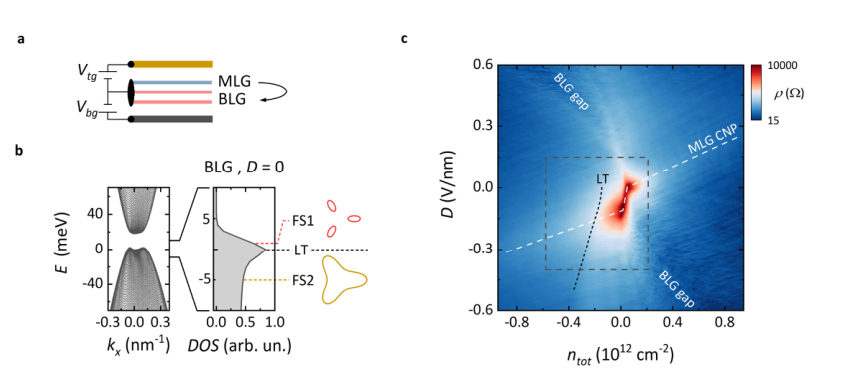
<figcaption class="paper-figure-caption"><b>Fig 2.</b> Figure 1a shows the device configuration. An hBN-encapsulated CVD-grown TMBG crystal, composed of a MLG (blue) twisted by 30° on top of BLG (red), is controlled by a top (Au, yellow) and a bottom (graphite, dark gray) gate electrode. The combined action of the gate voltages (Vbg and Vtg) induces a total charge density ntotௗ=ௗ1/e ∙ (CbgVbg + CtgVtg) and a displacement field D/ε0ௗ=ௗ(CbgVbg - CtgVtg)/2 [31], where Cbg and Ctg are the</figcaption>
</figure>
<figure class="paper-figure-card">
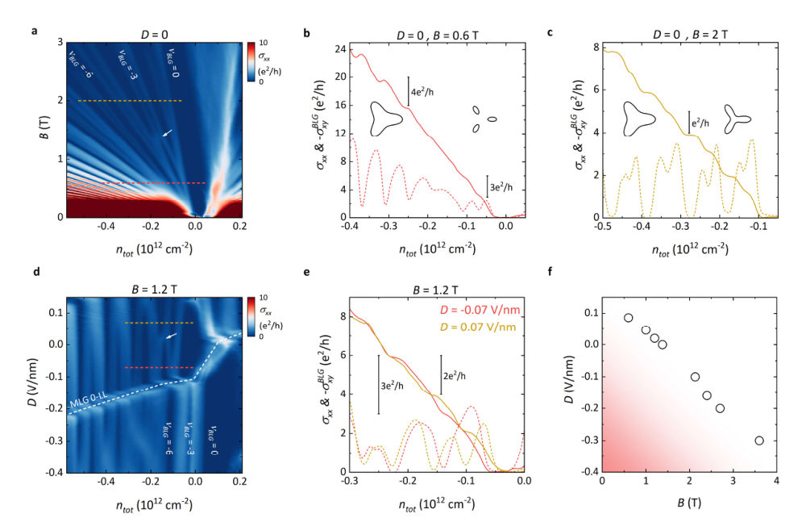
<figcaption class="paper-figure-caption"><b>Fig 3.</b> FIG. 2: Tunable BLG Lifshitz transitions in TMBG. (a) Longitudinal conductivity as a function of magnetic field and carrier density, measured at D = 0. The red and yellow dashed lines locate data plotted in panel b and c, respectively. The white arrow indicates a LL crossing close to the BLG valence band edge. (b) Longitudinal (dashed line) and Hall (continuous line) conductivity, measured along the red dashed line in panel a (B = 0.6 T). The evolution of the FS induced by hole doping is sketched. (c) Same as panel b, measured along the yellow dashed line in panel a (B = 2 T). (d) Longitudinal conductivity as a function of displacement field and carrier density, measured at B = 1.2 T. The...</figcaption>
</figure>
<figure class="paper-figure-card">
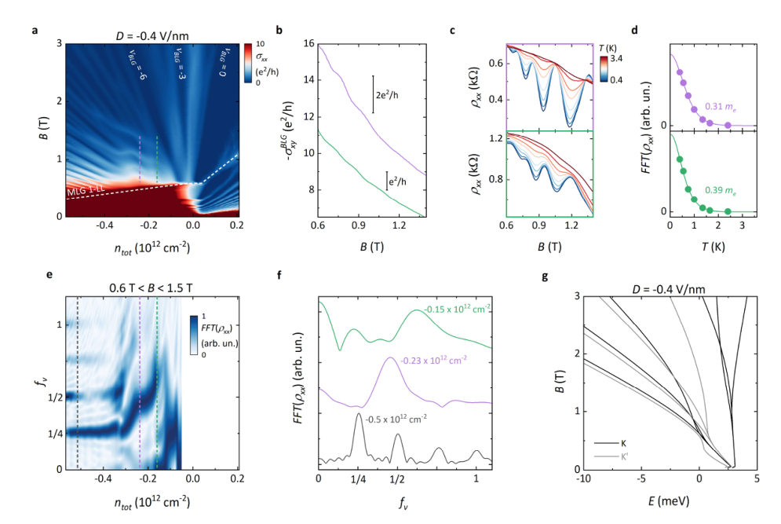
<figcaption class="paper-figure-caption"><b>Fig 4.</b> FIG. 3: Signatures of spontaneous isospin polarization of BLG holes. (a) Longitudinal conductivity as a function of magnetic field and carrier density, measured at D = -0.4 V/nm. The pink and green dashed lines identify data plotted in panels b and c. (b) Hall conductivity measured along the dashed lines in panel a. (c) Longitudinal resistivity at selected temperatures, measured along the dashed pink (upper) and green (lower) lines in panel a. (d) Amplitude of the FFT peak as a function of temperature (dots), corresponding to the resistivity oscillations in panel c. The continuous lines are fits to the data using the Lifshitz–Kosevich formula. (e) FFT power spectral density as a function of...</figcaption>
</figure>
</div>

<p><strong>Summary.</strong> This paper reports on the study of strongly correlated electronic phases in bilayer graphene using a twist-decoupled monolayer structure. By measuring transport properties at zero bias, the authors reveal evidence for Lifshitz transitions and signatures of partially isospin polarized quantum Hall states. This work establishes CVD-grown twisted graphene as a powerful platform for investigating fundamental many-body physics.</p>
<p><strong>Why it may be interesting.</strong> This work provides experimental validation for complex many-body physics in a tunable 2D material system, showing how proximity effects can be used to probe intrinsic correlated states otherwise requiring extreme external tuning.</p>
<details>
<summary>Detailed structure</summary>
<p><strong>Main problem.</strong> The study investigates correlated electronic phases, specifically Lifshitz transitions and isospin polarization, within bilayer graphene (BLG) when coupled to a nearby monolayer graphene (MLG). The goal is to explore these phenomena without relying on an external displacement field.</p>
<p><strong>Main result.</strong> The authors demonstrated the observation of three-fold degenerate quantum Hall states at zero bias and provided evidence for partially isospin polarized (PIP) phases, suggesting that electronic interactions are robustly preserved even with the proximity of MLG.</p>
<p><strong>Method.</strong> The research combines low-temperature magneto-transport measurements ($
ho$ vs. gate/field) with theoretical modeling using effective k.p Hamiltonians to analyze Fermi surface topology changes and quantum oscillations.</p>
<p><strong>Model / system.</strong> The physical system is a twist-decoupled monolayer-bilayer graphene (TMBG) stack, where the BLG hosts correlated phases tied to Lifshitz transitions at saddle points. The analysis utilizes effective k.p Hamiltonians describing the electronic structure near K-points.</p>
<p><strong>Key observables.</strong> Resistivity ($
ho$), Quantum Hall (QH) states characterized by filling factors ($
u_{ ext{BLG}}$), and anomalous frequencies extracted from quantum oscillations via FFT analysis.</p>
<p><strong>Important parameters / regimes.</strong> Zero external displacement field ($D=0$), doping level, magnetic field ($B$), and the coupling strength/proximity of the MLG.</p>
<p><strong>Assumptions / limitations.</strong> The primary assumption is that electronic interactions in BLG are preserved despite the presence of an atomically close MLG. Theoretical analysis relies on effective k.p Hamiltonian approximations.</p>
<p><strong>Figures summary.</strong> Figures show device configurations, $
ho$ vs. gate parameters highlighting Lifshitz transition regions, LL fan diagrams confirming QH states at $D=0$, and FFT power spectral densities demonstrating characteristic oscillation frequencies related to isospin polarization.</p>
<p><strong>Paper structure.</strong> The paper progresses by first establishing the TMBG platform's ability to access correlated phases at zero bias. It then details observations of tunable Lifshitz transitions via transport measurements, followed by spectroscopic evidence (FFT analysis) confirming spontaneous isospin polarization signatures.</p>
</details>
<details>
<summary>Abstract</summary>
<p>Bernal-stacked bilayer graphene (BLG) hosts correlated electronic phases tied to low-energy Lifshitz transitions at saddle points in its valence band. To access this regime, ultralow charge disorder and control over a vertical electric field are simultaneously required. Here, we employ a twist-decoupled monolayer (MLG) to bias a proximal BLG in the absence of an external displacement field (D). We thereby reveal three-fold degenerate quantum Hall states at D = 0, with multiple transitions driven by doping, magnetic and electric field. Spontaneous broken symmetry in the vicinity of the valence band edge is signaled by the emergence of quantum oscillations with anomalous frequencies and large quasiparticle mass. These results indicate that electronic interactions in BLG are preserved in presence of an atomically close MLG, while showcasing the potential of CVD-grown graphene multilayers for the exploration of correlated phases of matter.</p>
</details>
<p><sub><a href="#top">↑ back to top</a></sub></p>

<p><a id="paper-2608.03478"></a></p>
<h3 id="anisotropic-phonon-heat-flow-and-thermoelectric-response-in-tetragonal-gesmath1199math-and-gesemath1200math"><a href="http://arxiv.org/abs/2608.03478v1">Anisotropic Phonon Heat Flow and Thermoelectric Response in Tetragonal GeS$_2$ and GeSe$_2$</a></h3>
<p><strong>Authors:</strong> Neeraj Kulhari, Krishna Swaroop Sharma, K. C. Bhamu<br>
<strong>Type:</strong> theory · <strong>Category:</strong> other · <strong>PDF:</strong> <a href="https://arxiv.org/pdf/2608.03478v1">https://arxiv.org/pdf/2608.03478v1</a><br>
<strong>Analysis basis:</strong> full PDF text, analyzed in chunks
<strong>Topic relevance:</strong> <code>Keldysh / 2PI / non-Gaussian methods</code> <strong>1/5</strong> · <code>methods for driven-dissipative</code> <strong>1/5</strong> · <code>non-equilibrium dynamics</code> <strong>1/5</strong></p>
<div class="figure-strip-hint">↔ Scroll figures horizontally</div>
<div class="paper-figures-scroll">
<figure class="paper-figure-card">
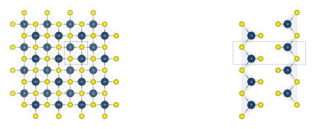
<figcaption class="paper-figure-caption"><b>Fig 1.</b> Fig. 1. Crystal structure of tetragonal GeS2 (space group P42/nmc): (a) top view and (b) side view. Blue and yellow spheres denote Ge and S atoms, respectively; translucent polyhedra in panel (a) show GeS4 tetrahedra, and the projected unit cell is indicated in panel (b).</figcaption>
</figure>
<figure class="paper-figure-card">
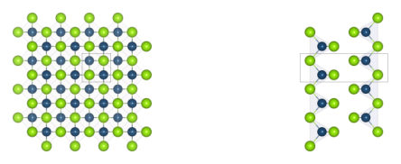
<figcaption class="paper-figure-caption"><b>Fig 2.</b> Fig. 2. Crystal structure of tetragonal GeSe2 (space group P42/nmc): (a) top view and (b) side view. Blue and green spheres denote Ge and Se atoms, respectively; translucent polyhedra in panel (a) show GeSe4 tetrahedra, and the projected unit cell is indicated in panel (b).</figcaption>
</figure>
<figure class="paper-figure-card">
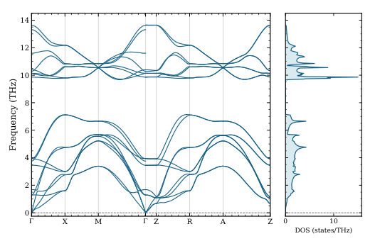
<figcaption class="paper-figure-caption"><b>Fig 3.</b> Fig. 3. DFPT phonon dispersion and total vibrational density of states of tetragonal GeS2. Frequencies are interpolated along Γ–X–M–Γ–Z– R–A–Z, while the DOS is integrated on a 40 × 40 × 20 uniform mesh. The non-analytical correction from the calculated dielectric tensor and Born effective charges is included.</figcaption>
</figure>
<figure class="paper-figure-card">
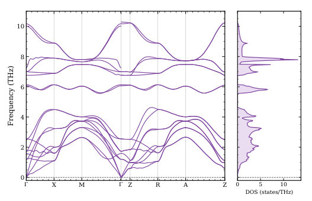
<figcaption class="paper-figure-caption"><b>Fig 4.</b> Fig. 4. DFPT phonon dispersion and total vibrational density of states of tetragonal GeSe2, calculated with the same path, non-analytical cor- rection, and 40×40×20 DOS mesh used for GeS2.</figcaption>
</figure>
<figure class="paper-figure-card">
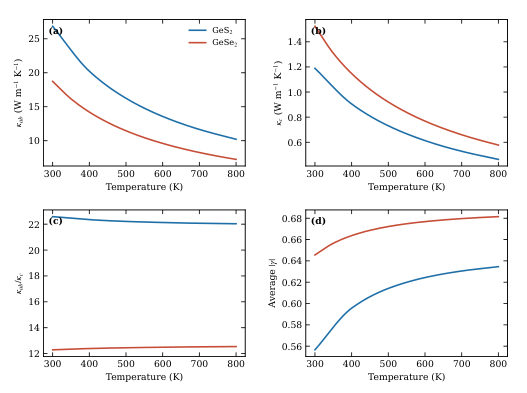
<figcaption class="paper-figure-caption"><b>Fig 5.</b> Fig. 5. Comparison of ShengBTE RTA lattice-transport descriptors for tetragonal GeS2 and GeSe2: (a) in-plane lattice thermal conductivity, (b) cross-plane lattice thermal conductivity, (c) anisotropy ratio κab/κc, and (d) average mode Grüneisen parameter.</figcaption>
</figure>
</div>

<p><strong>Summary.</strong> This theoretical study characterizes the thermoelectric potential of layered semiconductors GeS2 and GeSe2 by calculating their anisotropic thermal and electrical transport properties. Using advanced computational methods combining DFT with Boltzmann transport solvers, the authors demonstrate that these materials exhibit strong directional anisotropy in heat flow. The results highlight how suppressed out-of-plane lattice heat conduction can enhance the overall figure of merit (zT) for cross-plane applications.</p>
<p><strong>Why it may be interesting.</strong> While focused on solid-state thermoelectrics, the rigorous application of advanced many-body transport formalisms (Boltzmann equation solvers combined with DFT inputs) provides a template for analyzing energy/heat flow in complex quantum materials, which has parallels to open quantum system dynamics.</p>
<details>
<summary>Detailed structure</summary>
<p><strong>Main problem.</strong> The study investigates the anisotropic phonon heat flow and thermoelectric response in tetragonal GeS2 and GeSe2.</p>
<p><strong>Main result.</strong> Both compounds are identified as strongly anisotropic thermoelectrics, with cross-plane transport benefiting from suppressed lattice heat conduction. The calculated zT values are moderate but show clear directional dependence.</p>
<p><strong>Method.</strong> The research employs a combination of Density Functional Theory (DFT) for electronic structure and elastic properties, coupled with advanced Boltzmann transport formalisms (ShengBTE/AMSET) to calculate thermal and electrical transport coefficients.</p>
<p><strong>Model / system.</strong> The physical systems are the layered tetragonal semiconductors GeS2 and GeSe2. The calculations model lattice vibrations using DFPT and electronic transport using state-dependent scattering mechanisms within a Boltzmann framework.</p>
<p><strong>Key observables.</strong> Lattice thermal conductivities (in-plane vs. cross-plane), thermoelectric figure of merit (zT), band gaps, and anisotropic elastic constants ($C_{ij}$).</p>
<p><strong>Important parameters / regimes.</strong> Temperatures up to 800 K; carrier concentrations varying across the doping range; HSE03/Wannier derived band gaps.</p>
<p><strong>Assumptions / limitations.</strong> The analysis relies on combining AMSET electronic coefficients with ShengBTE RTA lattice thermal conductivity, and specific approximations are made for scattering mechanisms and transport tensor calculations.</p>
<p><strong>Figures summary.</strong> Figures systematically present component-resolved zT values as a function of carrier concentration and temperature for both materials, alongside detailed spectral analyses of the lattice thermal conductivity components ($\kappa_{ab}$ vs. $\kappa_c$).</p>
<p><strong>Paper structure.</strong> The paper follows a comprehensive computational structure: first establishing structural/electronic stability (DFT/HSE03), then calculating elastic properties, followed by detailed phonon transport analysis (ShengBTE for $\kappa_l$), and finally combining these with electronic transport (AMSET) to map out component-resolved zT performance.</p>
</details>
<details>
<summary>Abstract</summary>
<p>The electronic structure, lattice dynamics, bonding, elastic response, and anisotropic thermoelectric transport properties of tetragonal GeS$_2$ and GeSe$_2$ were investigated using density functional theory, density functional perturbation theory, Wannier interpolation, and scattering-aware Boltzmann transport. The relaxed structures are mechanically and dynamically stable within the calculated harmonic description. The HSE03/Wannier band gaps are 2.48 eV for GeS$_2$ and 1.23 eV for GeSe$_2$, while substitution of S by Se lowers the upper phonon frequency from approximately 13.6 to 10.3 THz.   The phonon Boltzmann transport calculations reveal pronounced lattice-transport anisotropy. Within the relaxation-time approximation, the 300 K in-plane and cross-plane lattice thermal conductivities are 26.86 and 1.19 W m$^{-1}$ K$^{-1}$ for GeS$_2$, and 18.74 and 1.52 W m$^{-1}$ K$^{-1}$ for GeSe$_2$, respectively. At 800 K, these values decrease to 10.22 and 0.46 W m$^{-1}$ K$^{-1}$ for GeS$_2$, and 7.25 and 0.58 W m$^{-1}$ K$^{-1}$ for GeSe$_2$. Frequency-resolved analysis shows that low-frequency phonons carry most of the heat, whereas the small cross-plane values reflect restricted out-of-plane phonon transport.   Combining the ShengBTE RTA lattice tensors with AMSET electronic coefficients gives $zT=0.257$ for n-type cross-plane GeS$_2$ at 800 K and $10^{19}$ cm$^{-3}$. The corresponding PBE-AMSET estimate for GeSe$_2$ is $zT=0.066$ for p-type cross-plane transport at 800 K and $3\times10^{20}$ cm$^{-3}$. LOBSTER analysis identifies mixed covalent--ionic Ge--X bonding, with Ge--S bonds having a larger stabilizing ICOHP magnitude than Ge--Se bonds ($-5.27$ versus $-4.74$ eV per bond). These results identify tetragonal GeX$_2$ compounds as strongly anisotropic thermoelectrics with moderate calculated $zT$ values whose cross-plane response benefits from suppressed lattice heat transport.</p>
</details>
<p><sub><a href="#top">↑ back to top</a></sub></p>

<p><a id="paper-2608.03058"></a></p>
<h3 id="pressure-induced-superconductivity-in-thermoelectric-semiconductor-mg3sb2"><a href="http://arxiv.org/abs/2608.03058v1">Pressure-induced Superconductivity in Thermoelectric Semiconductor Mg3Sb2</a></h3>
<p><strong>Authors:</strong> Cuiying Pei, Yasong Wu, Airan Li, Juefei Wu, Qi Wang, Yifan Zhu, Yi Zhao, Lingling Gao, Changhua Li, Weizheng Cao, Shihao Zhu, Mingxin Zhang, Yulin Chen, Chenguang Fu, Tiejun Zhu, Jiong Yang, Yanpeng Qi<br>
<strong>Type:</strong> both · <strong>Category:</strong> other · <strong>PDF:</strong> <a href="https://arxiv.org/pdf/2608.03058v1">https://arxiv.org/pdf/2608.03058v1</a><br>
<strong>Analysis basis:</strong> full PDF text, analyzed in chunks
<strong>Topic relevance:</strong> <code>analog quantum simulation</code> <strong>1/5</strong> · <code>driven-dissipative phase transition</code> <strong>1/5</strong></p>
<div class="figure-strip-hint">↔ Scroll figures horizontally</div>
<div class="paper-figures-scroll">
<figure class="paper-figure-card">
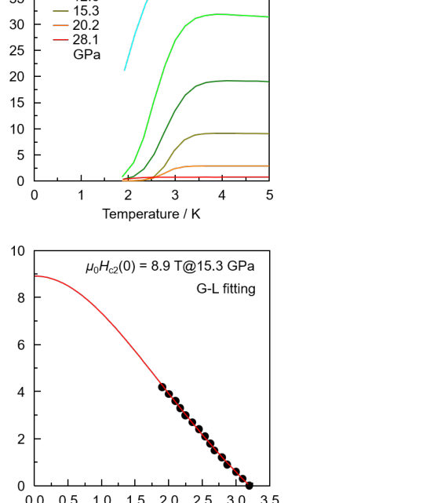
<figcaption class="paper-figure-caption"><b>Fig 1.</b> Figure 1 (a) Temperature-dependent resistivity of Mg3Sb2 under various pressures in run I; (b) Enlarged ρ(T) curve in the vicinity of the Tc; (c) Temperature-dependent resistivity under various magnetic fields at 15.3 GPa; (d) Temperature-dependent upper critical field of Mg3Sb2 at 15.3 GPa. Solid lines represent the fits based on the Ginzburg- Landau (G-L) formula.</figcaption>
</figure>
<figure class="paper-figure-card">
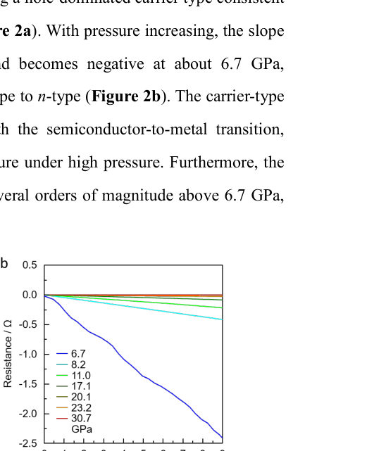
<figcaption class="paper-figure-caption"><b>Fig 2.</b> Figure 2 (a) Hall resistance of Mg3Sb2 as a function of magnetic field under various pressures; (b) Enlarged Hall resistance of Mg3Sb2 in the vicinity of the carrier-type transition.</figcaption>
</figure>
<figure class="paper-figure-card">
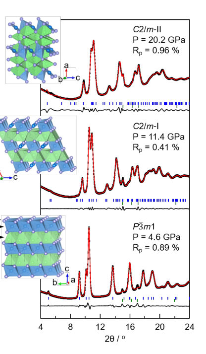
<figcaption class="paper-figure-caption"><b>Fig 3.</b> Figure 3 (a) Raman spectra of Mg3Sb2 under various pressures; (b) Phonon mode symmetry and vibration directions of Mg3Sb2; (c) Diffraction profiles of high-pressure phases of Mg3Sb2 at 4.6 GPa, 11.4 GPa, and 20.2 GPa, respectively. Experimental and calculated patterns are indicated by black stars and red lines, respectively. Solid lines below each curve represent residual intensity. Vertical bars indicate peak positions of Bragg reflections for Mg3Sb2 in the P3തm1 space group at 4.6 GPa, C2/m-I at 11.4 GPa, and C2/m-II at 20.2 GPa (blue) and Re gasket (olive). The inset shows structures of Mg3Sb2 under ambient condition (P3ത m1) and high pressure (C2/m-I and C2/m-II), respectively.</figcaption>
</figure>
<figure class="paper-figure-card">
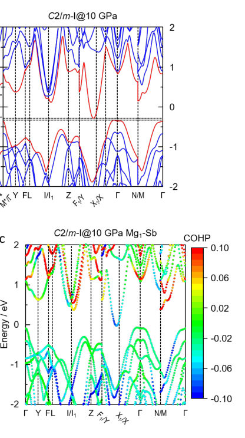
<figcaption class="paper-figure-caption"><b>Fig 4.</b> Figure 4 Calculated band structures and band-resolved pCOHP. (a) Aligned bands of the P3തm1 phase at ambient pressure and the C2/m-I phase at 10 GPa with respect to the average Mg 1s orbitals. Red lines indicate the band edges; (b) Band-resolved pCOHP of octahedral Mg-Sb for P3തm1 phase; (c) Band-resolved pCOHP of octahedral Mg-Sb for C2/m-I phase. The Fermi level is set as zero.</figcaption>
</figure>
<figure class="paper-figure-card">
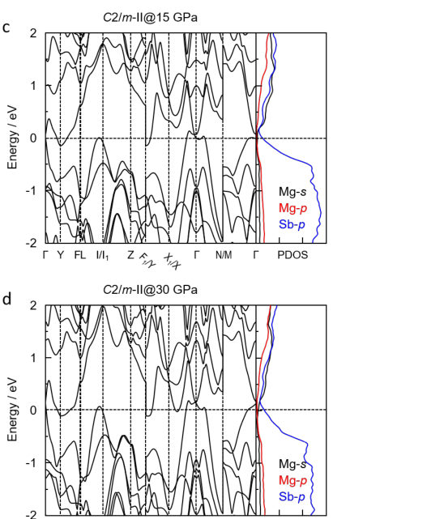
<figcaption class="paper-figure-caption"><b>Fig 5.</b> Figure 5 (a)-(b) Band structures and PDOS of the C2/m-I phase at various pressures; (c)-(d) Band structures and PDOS of the C2/m-II phase at various pressures.</figcaption>
</figure>
</div>

<p><strong>Summary.</strong> This work reports the discovery of pressure-induced superconductivity in $ ext{Mg}_3   ext{Sb}_2$, demonstrating that high pressure drives structural phase transitions and a carrier type crossover. By combining transport measurements, XRD, and Raman spectroscopy, the authors establish a detailed high-pressure phase diagram, revealing how electronic structure dictates emergent quantum properties like superconductivity.</p>
<p><strong>Why it may be interesting.</strong> While focused on solid-state physics rather than quantum information, the study's detailed mapping of emergent quantum phenomena (superconductivity) driven by external parameters (pressure) provides an excellent model system for understanding how tuning external fields can induce novel quantum states in condensed matter systems.</p>
<details>
<summary>Detailed structure</summary>
<p><strong>Main problem.</strong> The study investigates pressure-induced superconductivity, electronic transitions, and structural phase changes within the thermoelectric semiconductor $ ext{Mg}_3   ext{Sb}_2$. It aims to map out the high-pressure phase diagram of this material.</p>
<p><strong>Main result.</strong> Superconductivity is discovered in $   ext{Mg}_3   ext{Sb}_2$ under pressure, exhibiting a dome-shaped critical temperature ($T_c$) peaking at $3.3 	ext{ K}$ at $12.6 	ext{ GPa}$. This superconductivity coincides with structural transitions and a carrier type crossover from p-type to n-type.</p>
<p><strong>Method.</strong> The research combines multiple techniques: in situ high-pressure transport measurements (resistivity, Hall effect), X-ray diffraction (XRD) for structural identification, Raman spectroscopy for vibrational analysis, and first-principles theoretical calculations.</p>
<p><strong>Model / system.</strong> The physical system is the $    ext{Mg}_3   ext{Sb}_2$ semiconductor crystal. The study tracks its electronic structure changes across different high-pressure phases ($    ext{P}ar{3}m1  o   ext{C}2/m   ext{-I}     o   ext{C}2/m   ext{-II}$), which are linked to the emergence of superconductivity.</p>
<p><strong>Key observables.</strong> Superconducting critical temperature ($T_c$), resistivity ($
ho(T)$), Hall coefficient ($R_H$), structural phases ($    ext{P}ar{3}m1$, $  ext{C}2/m   ext{-I}$, $ ext{C}2/m   ext{-II}$), and carrier type (p-type to n-type).</p>
<p><strong>Important parameters / regimes.</strong> Pressure regimes up to $30 	ext{ GPa}$; superconducting critical temperature peaking at $3.3 	ext{ K}$ at $12.6 	ext{ GPa}$.</p>
<p><strong>Assumptions / limitations.</strong> The analysis relies on the assumption that structural phase transitions are directly coupled to changes in electronic properties and superconductivity.</p>
<p><strong>Figures summary.</strong> Figures illustrate resistivity vs pressure showing superconducting signatures, Hall resistance confirming carrier crossover, and Raman/XRD spectra mapping out the sequence of structural phases ($    ext{P}ar{3}m1$, $  ext{C}2/m   ext{-I}$, $ ext{C}2/m   ext{-II}$) under increasing pressure.</p>
<p><strong>Paper structure.</strong> The paper systematically presents evidence for high-pressure phase transitions using XRD and Raman, correlates these structural changes with electronic property shifts (metallization, p$ o$n crossover) via transport measurements, and finally maps the resulting superconducting dome structure to establish a comprehensive high-pressure phase diagram.</p>
</details>
<details>
<summary>Abstract</summary>
<p>The intrinsic electronic structures of narrow bandgap thermoelectric (TE) materials serve as a platform for the investigation of coupling effects of quasi-particles under high pressure, enabling the exploration of emerging electronic and phonon transport, superconductivity, and topological transition. Here, we report the discovery of pressure-induced superconductivity in the TE semiconductor Mg3Sb2. Upon the increased pressure, the metallization occurs at 8.7 GPa, followed by a superconducting transition concomitant with a carrier-type crossover from p- to n-type. This phenomenon arises from a pressure-induced structural phase transition from the semiconducting P-3m1 to the metallic C2/m-I phase. The superconducting critical temperature (Tc) exhibits a dome-shaped pressure dependence, peaking at 3.3 K at 12.6 GPa. Combined theoretical calculations, high-pressure Raman spectroscopy, and X-ray diffraction (XRD) measurements reveal an additional structural transition above 20 GPa, yielding a distinct C2/m-II phase. Our findings establish the high-pressure phase diagram of Mg3Sb2, elucidate its pressure-dependent electronic properties, and provide valuable insights for future investigations of TE materials under high pressure.</p>
</details>
<p><sub><a href="#top">↑ back to top</a></sub></p>

<p><a id="paper-2608.03680"></a></p>
<h3 id="machine-learning-bandgap-prediction-of-nanoporous-graphenes-with-water"><a href="http://arxiv.org/abs/2608.03680v1">Machine Learning Bandgap Prediction of Nanoporous Graphenes with Water</a></h3>
<p><strong>Authors:</strong> Sneha Mittal, Alan E. Anaya Morales, Victor Rosendal, Mads Brandbyge<br>
<strong>Type:</strong> theory · <strong>Category:</strong> disordered systems and neural networks · <strong>PDF:</strong> <a href="https://arxiv.org/pdf/2608.03680v1">https://arxiv.org/pdf/2608.03680v1</a><br>
<strong>Analysis basis:</strong> full PDF text, analyzed in chunks
<strong>Topic relevance:</strong> <code>methods for driven-dissipative</code> <strong>1/5</strong></p>
<div class="figure-strip-hint">↔ Scroll figures horizontally</div>
<div class="paper-figures-scroll">
<figure class="paper-figure-card">

<figcaption class="paper-figure-caption"><b>Fig 1.</b> Figure 1. (a) Atomic structure of NPG showing the selected unit-cell region used to model single and bulk water NPG/h-NPG systems. Single-water configurations are shown for NPG and h-NPG, (b) a representative bulk-water configuration, and (c) an end-to-end ML framework comprising data generation, model training, prediction, and interpretation. Structural descriptors, including SOAP and physics-informed descriptors, are extracted to encode the relationship between atomic configurations and bandgap energies. Multiple data- driven black-box and physics-informed grey-box models are trained and evaluated, followed by hyperparameter tuning. The best-fitted models are then applied to predict...</figcaption>
</figure>
<figure class="paper-figure-card">
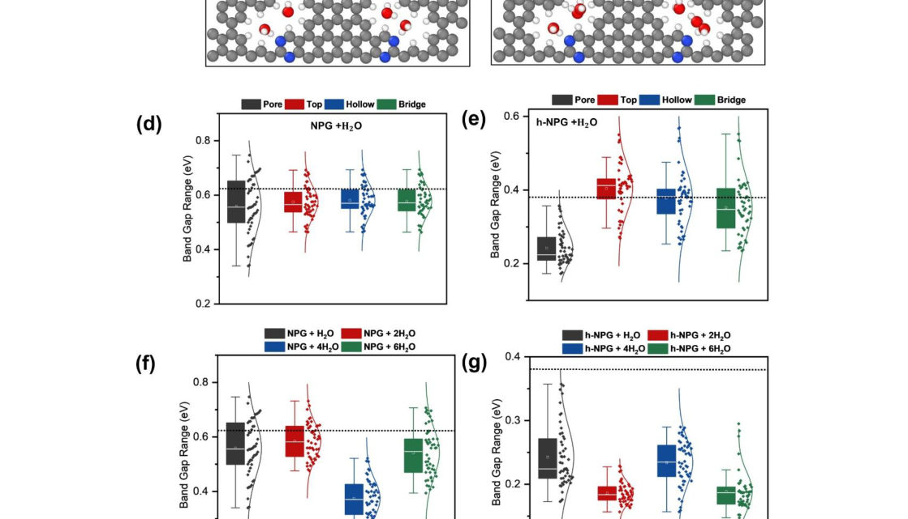
<figcaption class="paper-figure-caption"><b>Fig 2.</b> Figure 2. (a) Periodic unit cells of NPG and h-NPG with a single-water molecule adsorbed at the pore site, the arrows show different adsorption sites for water, and (b) electronic band structures of NPG and h-NPG in the presence of a single-water molecule. The band dispersions are plotted along the high-symmetry path X → Γ → Z in the Brillouin zone. The black dashed band lines indicate the corresponding band structures of the pristine systems for comparison. (c) Schematic of the optimized configuration of h-NPG with an increasing number of water</figcaption>
</figure>
<figure class="paper-figure-card">
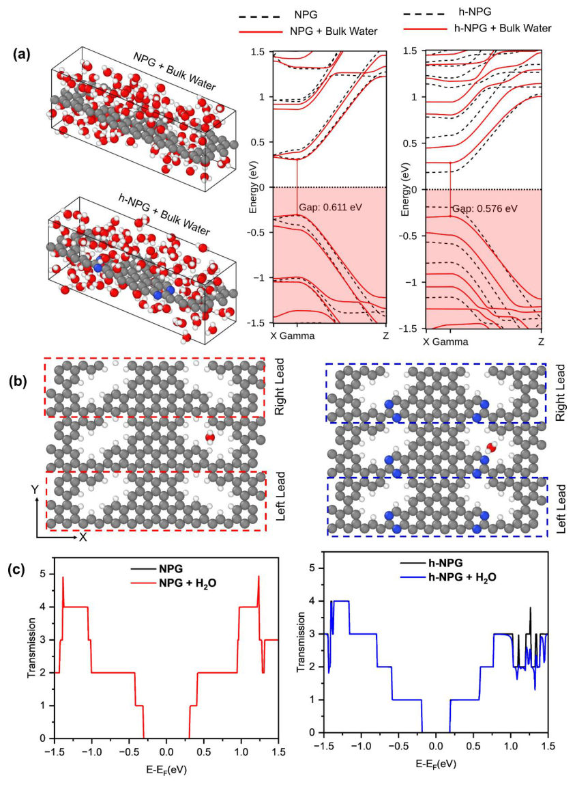
<figcaption class="paper-figure-caption"><b>Fig 3.</b> Figure 3. (a) Periodic unit cells of NPG and h-NPG under bulk-water at ambient density (𝜌= 1.0 𝑔 𝑐𝑚−3) and corresponding band structures, (b) Two-probe transport geometries of NPG/h- NPG with water adsorbed at the pore site. The dashed boxes indicate the electrode regions used in the transport calculations, and (c) Zero-bias transmission spectra of single-water NPG/h- NPG systems. For comparison, the transmission spectra of corresponding pristine systems are also shown. The Fermi energy is shifted to zero.</figcaption>
</figure>
<figure class="paper-figure-card">
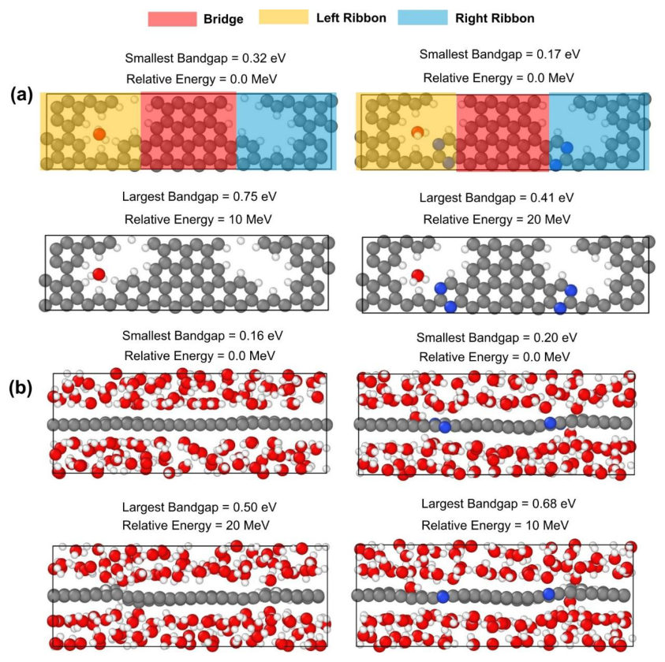
<figcaption class="paper-figure-caption"><b>Fig 4.</b> Figure 4. The lowest and highest bandgap configurations of NPG and h-NPG in (a) single- water and (b) bulk water environments. Atom color code: carbon (grey), hydrogen (white), oxygen (red), and nitrogen (blue).</figcaption>
</figure>
<figure class="paper-figure-card">
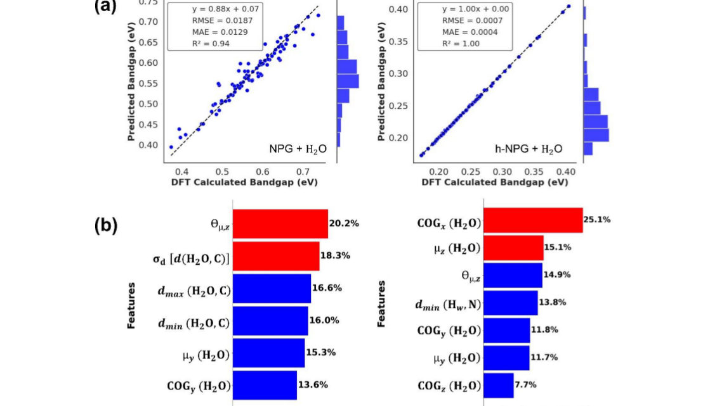
<figcaption class="paper-figure-caption"><b>Fig 5.</b> Fig. 6 Grey-box ML prediction and feature-importance analysis for single-water NPG and h- NPG systems. (a) Marginal histogram parity plots comparing GPR-predicted bandgaps with DFT-calculated bandgaps for NPG + H2O and h-NPG + H2O using physics-informed descriptors. (b) SHAP-based global feature-importance plots showing the relative contribution of the selected descriptors to the bandgap prediction for each system.</figcaption>
</figure>
</div>

<p><strong>Summary.</strong> The authors investigate how water influences the electronic bandgap of nanoporous graphene structures by combining DFT simulations with Machine Learning. They develop sophisticated ML models using structural descriptors derived from molecular dynamics to predict the bandgap accurately while simultaneously identifying key physical factors, such as dipole orientation and local hydration structure, that control this quantum transport property.</p>
<p><strong>Why it may be interesting.</strong> This work bridges solid-state physics with advanced data science by using machine learning not just as a black box predictor, but as an <em>interpretable</em> tool to derive physical rules governing quantum material response to environmental coupling (water).</p>
<details>
<summary>Detailed structure</summary>
<p><strong>Main problem.</strong> The study aims to understand how the presence of confined or ambient water molecules modulates the quantum electronic bandgap in nanoporous graphene (NPG) and its nitrogen-doped variant ($  ext{h-NPG}$).</p>
<p><strong>Main result.</strong> Water interaction significantly affects $  ext{h-NPG}$ bandgaps, which is quantified by developing interpretable Machine Learning models that correlate structural descriptors of the water environment with electronic properties.</p>
<p><strong>Method.</strong> The research combines Density Functional Theory ($  ext{DFT}$) and *ab initio* Molecular Dynamics ($    ext{AIMD}$) simulations to generate data, followed by training various supervised ML regression models (like GPR) using SOAP-based descriptors for prediction.</p>
<p><strong>Model / system.</strong> The system involves NPG/h-NPG nanostructures interacting with water. The electronic properties are calculated via DFT on configurations sampled through AIMD simulations across varying water densities and adsorption sites.</p>
<p><strong>Key observables.</strong> Bandgap energy, dipole moments (magnitude and orientation), water-substrate distances ($   ext{d}<em _max="\max">{\min},  ext{d}</em>$), and various structural descriptors derived from the local atomic environment.</p>
<p><strong>Important parameters / regimes.</strong> Temperature ($300 	ext{ K}$), cutoff radii ($r_{	ext{cut}} = 6 	ext{ Å}$ or $5 	ext{ Å}$), and water density (single-water vs. bulk $\sim 1.0 	ext{ g/cm}^3$).</p>
<p><strong>Assumptions / limitations.</strong> The ML models are trained to balance predictive accuracy with physical interpretability, assuming that the bandgap variation can be mapped onto local structural and electrostatic descriptors.</p>
<p><strong>Figures summary.</strong> Figures illustrate the ML framework, DFT-calculated band structures comparing pristine vs. hydrated states, UMAP embeddings showing descriptor space diversity, and plots correlating predicted vs. calculated bandgaps using various physical features.</p>
<p><strong>Paper structure.</strong> The paper systematically develops a multi-scale approach: first, simulating water interactions ($  ext{AIMD}$); second, extracting comprehensive structural/electrostatic descriptors (SOAP, dipole moments, distances); third, training and validating ML models (GPR, KRR, etc.) to predict the bandgap; and finally, interpreting which specific descriptors govern the observed electronic modulation.</p>
</details>
<details>
<summary>Abstract</summary>
<p>The structure and dynamical behavior of water confined at or within nanostructures is a topic central to many fields, from biology to emerging electronics such as carbon nanostructures. Nanoporous graphene (NPG) containing periodic nanoscale pores with specific topologies has emerged as a promising material in carbon-based nanoelectronics; however, its interaction with ambient water remains poorly understood. Here, we combine density functional theory (DFT), ab initio molecular dynamics (AIMD), and interpretable machine learning (ML) to reveal how water controls quantum transport in NPGs. Depending on the local hydration structure, the bandgap varies by more than a factor of two across NPG and nitrogen-doped hybrid (h-NPG) systems. To uncover the underlying mechanism, we develop Smooth Overlap of Atomic Positions (SOAP)-based black-box and physics-informed grey-box ML models. The Gaussian process regression model achieves near-DFT accuracy while enabling physical interpretation. Analysis identifies water dipole orientation, water-substrate distance, water center-of-geometry, and ribbon-resolved dipole moments as the dominant factors controlling bandgap modulation across NPG and h-NPG systems.</p>
</details>
<p><sub><a href="#top">↑ back to top</a></sub></p>
<h3 id="other-secondary-papers-1">Other secondary papers (1)</h3>
<details>
<summary>Show other secondary papers</summary>

<p><a id="paper-2608.03178"></a></p>
<h3 id="quaternion-kahler-geometry-of-time-reversal-symmetric-crystals"><a href="http://arxiv.org/abs/2608.03178v1">Quaternion-Kahler geometry of time reversal symmetric crystals</a></h3>
<p><strong>Authors:</strong> Hyeongmuk Lim, Junseo Jung, Yuting Qian, Bohm-Jung Yang<br>
<strong>Type:</strong> theory · <strong>Category:</strong> other · <strong>PDF:</strong> <a href="https://arxiv.org/pdf/2608.03178v1">https://arxiv.org/pdf/2608.03178v1</a><br>
<strong>Analysis basis:</strong> full PDF text, analyzed in chunks</p>
<div class="figure-strip-hint">↔ Scroll figures horizontally</div>
<div class="paper-figures-scroll">
<figure class="paper-figure-card">
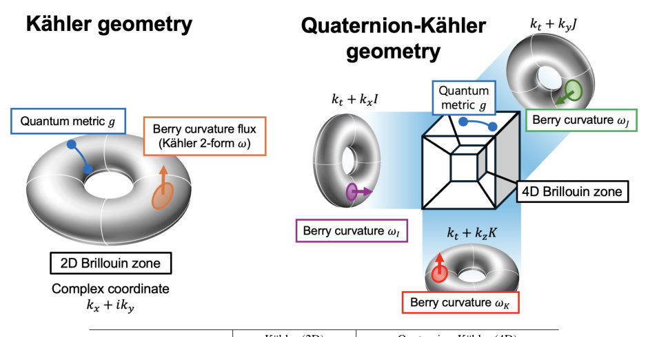
<figcaption class="paper-figure-caption"><b>Fig 1.</b> Figure 1. Schematic comparison of K¨ahler and quaternion-K¨ahler band geometry. In an ideal two-dimensional Chern band, the quantum metric and the Abelian Berry curvature are related by a complex structure: the metric measures distances between nearby Bloch states, while the Berry curvature measures the phase rotation accumulated around an infinitesimal momentum space loop. For a time reversal symmetric Kramers pair in four dimensions, the Abelian curvature is replaced by an SU(2) curvature with three local components, F I, F J, and F K. These components rotate into one another under a change of Kramers frame, while the metric g and the canonical four-form Ω= P</figcaption>
</figure>
<figure class="paper-figure-card">
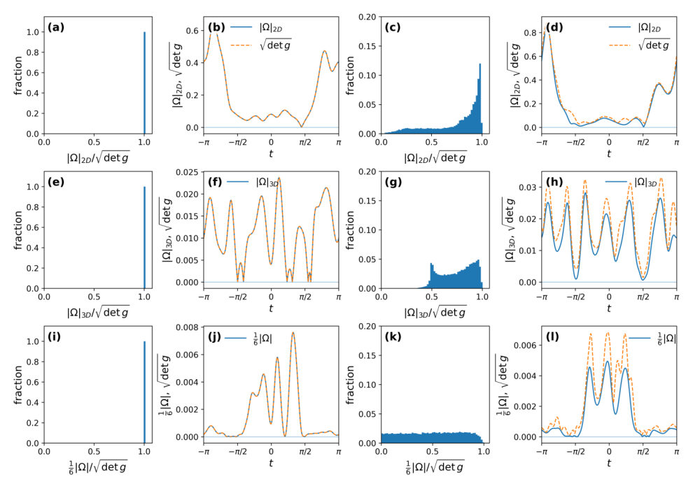
<figcaption class="paper-figure-caption"><b>Fig 2.</b> Figure 2. Induced metric–curvature inequalities in random Wilson–Dirac models. The figure compares the quantum geometric local bounds in two, three, and four dimensions. The rows correspond respectively to the two-dimensional slice k3 = k4 = 0, the three-dimensional slice k4 = 0, and the full four-dimensional Brillouin zone. In the histogram panels, the plotted target function is Ad(k)/ p</figcaption>
</figure>
<figure class="paper-figure-card">
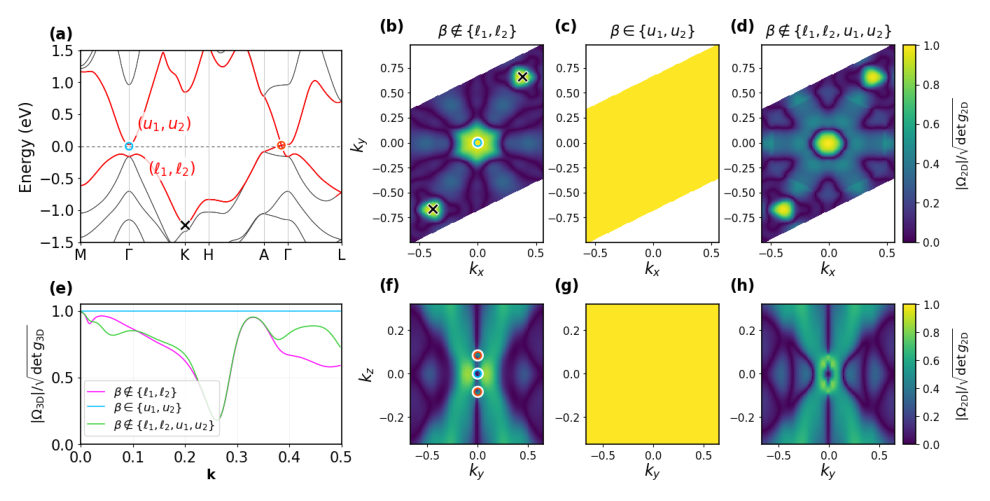
<figcaption class="paper-figure-caption"><b>Fig 3.</b> Figure 3. Metric–curvature inequalities in Na3Bi. Numerical evaluation of the induced quaternionic metric–curvature bounds for the Na3Bi band structure. (a) Band dispersion along high-symmetry lines. The target lower Kramers pair {ℓ1, ℓ2} and the upper low-energy pair {u1, u2} are shown in red, and the dashed line denotes the Fermi level EF . (b–d) Two-dimensional bound √det g2D ≥|Ω|2D on the displayed (kx, ky) slice, represented by the saturation ratio |Ω|2D/√det g2D. (e–h) Corresponding three-dimensional bound √det g3D ≥|Ω|3D. Panel (e) shows a line cut along (k1, k2, k3) = (t, t, t), whereas panels (f–h) show maps on the displayed (ky, kz) plane. In the spectral decomposition of the...</figcaption>
</figure>
</div>
<p><strong>Summary.</strong> The paper establishes that the quantum geometry describing time reversal symmetric crystals must be quaternionic rather than Kähler. By introducing the Quaternion-Quantum Geometric Tensor, the authors derive fundamental metric–curvature inequalities that constrain the band structure's topology in 2D, 3D, and 4D systems.</p>
<p><strong>Why it may be interesting.</strong> This work provides a powerful mathematical generalization of topological band theory from Abelian (Chern) to non-Abelian (Quaternion-Kähler) geometry, offering new constraints on the electronic structure of time-reversal symmetric materials.</p>
<details>
<summary>Detailed structure</summary>
<p><strong>Main problem.</strong> To develop a generalized geometric framework for quantum phenomena in time reversal symmetric crystals, moving beyond standard Kähler geometry.</p>
<p><strong>Main result.</strong> The geometry governing Kramers pairs is shown to be quaternionic, leading to the Quaternion-Quantum Geometric Tensor (QQGT) which unifies the metric and non-Abelian Berry curvature components.</p>
<p><strong>Method.</strong> The authors employ advanced differential geometry, mapping band structures into quaternion projective space ($\mathbb{HP}^n$) and deriving metric–curvature inequalities from the QQGT.</p>
<p><strong>Model / system.</strong> The study focuses on time reversal symmetric crystals with spin, characterized by Kramers degeneracy pairs of Bloch states. The analysis generalizes concepts from Abelian Chern bands to non-Abelian structures relevant for these systems.</p>
<p><strong>Key observables.</strong> Quantum metric ($g$), three components of the $   ext{SU}(2)$ Berry curvature ($\mathbf{F}_I, \mathbf{F}_J, \mathbf{F}_K$), and topological invariants like the second Chern number ($C_2$) and Fu–Kane–Mele invariants.</p>
<p><strong>Important parameters / regimes.</strong> The dimensionality (2D, 3D, 4D) of the Brillouin zone manifold; the structure dictated by Kramers pairs ($\Theta = PT$).</p>
<p><strong>Assumptions / limitations.</strong> The analysis assumes the existence of a Kramers pair structure and relies on rigidity arguments within quaternionic projective space to establish bounds.</p>
<p><strong>Figures summary.</strong> Figure 1 schematically compares Kähler (2D, Abelian) and Quaternion-Kähler (4D, non-Abelian) band geometry; other figures illustrate band structure folding when time reversal symmetry is present.</p>
<p><strong>Paper structure.</strong> The paper progresses by first identifying the geometric inadequacy of Kähler theory for spinful systems, then introducing the quaternionic framework via the QQGT, establishing 4D bounds, and finally deriving lower-dimensional analogues (2D and 3D) relating to known topological invariants.</p>
</details>
<details>
<summary>Abstract</summary>
<p>Quantum geometry reveals how the shape of Bloch wave functions governs correlated quantum phenomena. Its standard formulation describes isolated complex bands, where Berry curvature is Abelian and ideal geometry is Kahler. However, time reversal symmetric crystals with spin require a different language since Kramers degeneracy pairs Bloch states and turns Berry curvature into a non-Abelian SU(2) field. Here we show that Kramers pair band geometry is quaternionic. A minimal Kramers pair defines a map into quaternion projective space, and its quaternionic quantum geometric tensor unifies the quantum metric with the three SU(2) Berry curvature components. The non-negativity of this tensor imposes local metric-curvature inequalities, whose saturation defines the non-Abelian counterpart of ideal Chern bands. In four dimensions, the ideal limit further yields an algebraic structure related to the four-dimensional quantum Hall effect. Our results promote ideal quantum geometry from the Abelian geometry of Chern bands to the quaternionic, non-Abelian geometry of time reversal symmetric quantum matter.</p>
</details>
<p><sub><a href="#top">↑ back to top</a></sub></p>
</details>

<hr>
<p>
<a href="index.html">← Index</a>
 · <a href="papers_06.html">← Previous</a>
</p>
<hr>

</body>
</html>
